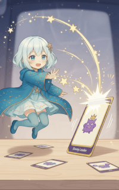
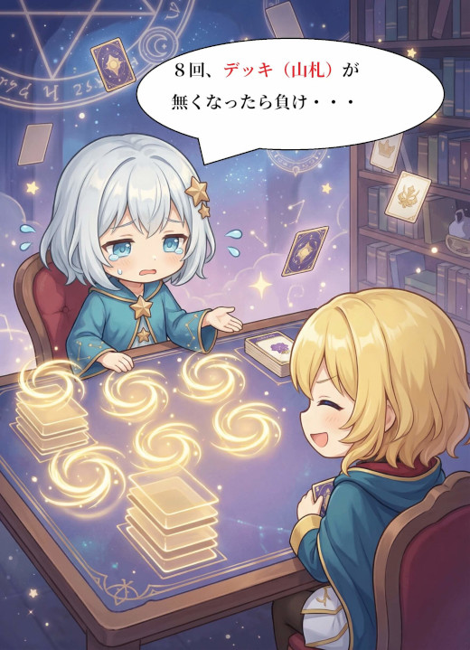
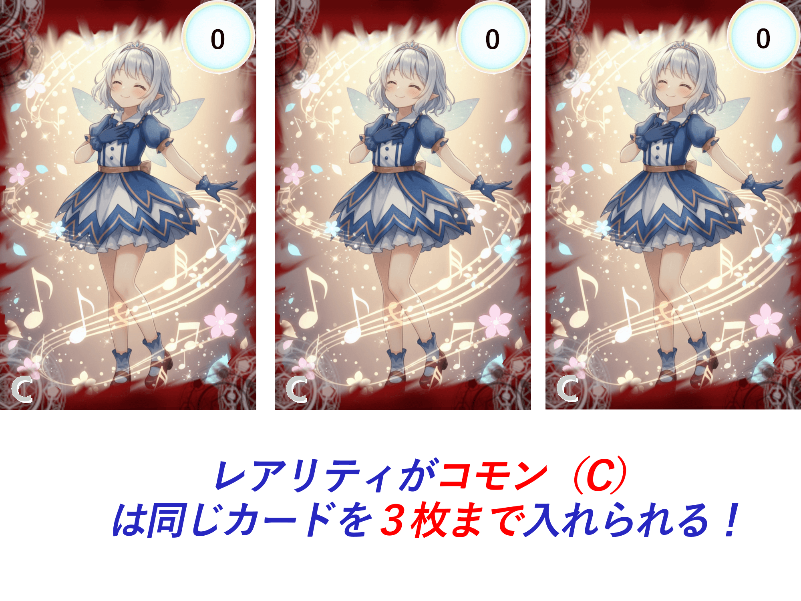
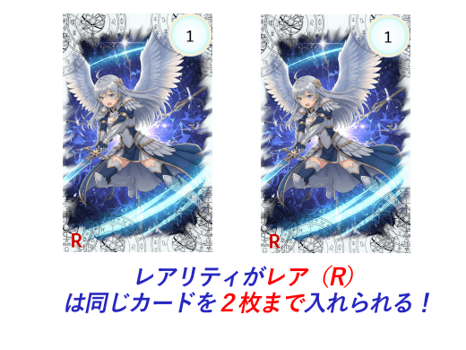
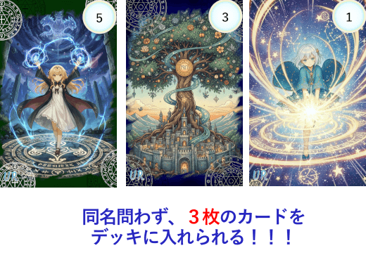

ルール (RULE)
HorizonNotesの遊び方を紹介します。
1. 3分でわかる概要
勝利条件
このゲームの勝敗は、主に以下の3つの条件によって決まります。
-
1. リーダーの撃破 (メイン)
相手の「リーダーリーダーアルカステラアルカステラ：プレイヤーのユニット。キミの相棒である星の精霊。」のHPを0にしたプレイヤーが勝利します。（最も基本的な勝利方法です）  -
2. ライブラリアウト (敗北条件)
デッキ（山札）が0枚になった際に行われる「デッキの再構築デッキの再構築：セメタリーのカードをシャッフルしてデッキに戻す。
その後、プレイヤーはアストラルコード（必殺技）の使用権を得る。」が8回目に達したプレイヤーは、その時点で敗北します。  -
3. 特殊効果
一部のカードが持つ「特殊勝利」または「特殊敗北」の効果が発動した場合、その内容に従って勝敗が決定します。
デッキ構成
このゲームでは、戦略の核となる「スペルカードデッキ」（30枚）と、あなたと共に戦う3枚の「アルカステラ」を準備します。
1. スペルデッキ (合計30枚)
メインの山札となる「スペルカード」を30枚で構築します。
レアリティについて
スペルカードには３種類のレアリティが存在し、
レアリティによってそれぞれデッキに入れられる枚数が異なります。
- コモン (Common): 同名カード3枚までデッキに入れられます。 
- レア (Rare): 同名カード2枚までデッキに入れられます。 
- UR (Ultimate Rare): デッキ全体で合計3枚まで入れられます。 
2. アルカステラ (合計3枚)
デッキとは別に、「アルカステラ」を3体選びます。 この3体は、バトル開始時に最初から場に配置されます。
リーダーの設定: 3体のうち1体を「リーダー」として指定します。 リーダーのHPが0になると敗北となります。
エーテルの基本
エーテルエーテル：アルカステラの力の源。
スペルカードやアルカステラのスキルの発動に必要なコスト。は、スペルカードをプレイするために必要な「コスト」です。
このゲームのエーテルは「使い切り」であり、計画的な管理が勝利の鍵となります。
1. エーテル変換
「チャージフェイズ」中、お互いのプレイヤーが「パス」を宣言するまで、手札のカードを「エーテルエリア」に置く【エーテル変換】を行えます。
-
ターンプレイヤーから宣言:
まずターンプレイヤーが「手札のカードを1枚変換する」か「パスする」かを選びます。次に、相手プレイヤーが選びます。 -
パスするまで継続:
お互いが連続で「パス」を宣言するまで、この行動は交互に何度でも繰り返せます。手札が許す限り、一気にエーテルを貯めることも可能です。
変換したカードのコストが、そのまま「エーテル残量」としてチャージされます。
例：【コスト3】のカードを置くと、「残量3」のエーテルとして場に保持されます。
あなたが使えるエーテルの総量は、エーテルエリアにある全カードの「残量合計」＋スキル等で得たボーナスエーテルです。
2. エーテルの支払い（消費）
スペルカードのコストを支払う時、エーテルエリアにあるカードの「残量」を消費します。
-
分散払いOK:
【コスト2】を支払う場合、「残量3のカードA」から2を支払うことも、「残量1のカードB」と「残量1のカードC」から1ずつ支払うことも可能です。 -
任意に選択:
どのカードの残量から、どれだけ支払うかはプレイヤーが自由に決定できます。 -
使い切り:
支払いの結果、「残量」が0になったカードは、エーテルエリアからセメタリー セメタリー：使用済みカードのエリア。使い切ったエーテルカードが送られ、デッキ再構築の際に山札に戻る。 （墓地）に送られます。
デッキの再構築とアストラルコード
このゲームには、デッキ（山札）が0枚になった時に発動する、特殊な「デッキの再構築」システムが存在します。
1. デッキの再構築
山札が0枚になった瞬間、あなたのセメタリー（墓地）にある全てのカードがシャッフルされ、新たな山札として再セットされます。
この「再構築」が行われるたび、あなたは強力な「アストラルコードアストラルコード：デッキ再構築で得た使用権を消費して発動する必殺技。」の使用権を得ます。
2. アストラルコード（必殺技）
-
使用権の獲得:
デッキが再構築されるたび、アストラルコードの「使用権」を1回獲得します。 -
累積はしない:
この使用権はストック（累積）できません。使用権を保持したまま再度デッキが再構築されても、使用権は1回のままです。 -
使用で消費:
アストラルコードを使用すると、使用権は失われます。
3. 敗北条件
この「デッキの再構築」はゲーム中カウントされます。
8回目の再構築が行われたプレイヤーは、その時点で敗北となります。